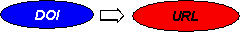
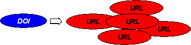
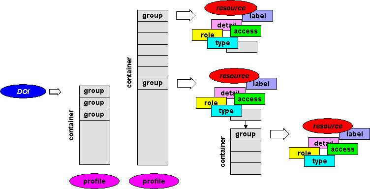

<body>
<center>
<table width=90%>
<tr>
<td>

<br>
<i><b>Fig. 1.</b> DOI Single Resolution. This is the current position with DOI - one DOI resolves to one URL.
Essentially this provides similar functionality to a PURL - a Persistent URL.</i> 
<p>
</td>
</tr>
<tr>
<td>

<br>
<i><b>Fig. 2.</b> DOI Multiple Resolution. This is the 'One to Many' scenario - multiple URLs but 
with no
indication of their relationship. The demo DOIs for D-Lib magazine issues which link mirror sites
hosting D-Lib magazine
can be resolved this way. The problem with this approach is that one doesn't know what to return
to the end user - a single URL, or multiple URLs. Also one has no means of presenting this information 
- URLs in their raw state are at best unpalatable.</i> 
<p>
</td>
</tr>
<tr>
<td>

<br>
<i><b>Fig. 3.</b> DOI Articulate Resolution. This is the vision of the DOI-SDI project which is
aiming to provide a framework to link multiple resources. The resources are qualified by properties
and are arranged into a hierarchy and with ordering.</i> 
<p>
</td>
</tr>
</body>
